Gambar layar memakai data contoh; nama sekolah, guru, dan isi laporan di aplikasi Anda akan berbeda.
Bagian 1Mengenal aplikasi CERMAT
CERMAT terdiri dari dua bagian dalam satu aplikasi. Pustaka Digital CERMAT berisi folder materi program (Silabus, Modul, Bahan Tayang, Lembar Kerja). Laporan CERMAT dipakai untuk menyusun, mengesahkan, dan mengunduh laporan 22 pendampingan. Satu akun dipakai untuk keduanya.
Bisa dibuka di HP maupun laptop. Akun (username dan password awal) diberikan oleh admin program.
Bagian 2Memasang aplikasi di HP dan laptop
Setelah dipasang, CERMAT muncul sebagai ikon di layar utama dan terbuka seperti aplikasi biasa, tanpa perlu mengetik alamat. Memasang tidak lewat Play Store atau App Store dan tidak memakan banyak memori.
HP Android (Google Chrome)
- 1Buka Chrome, ketik alamat pusatbelajargurukudus.github.io/cermat, lalu tunggu halaman terbuka.
- 2Ketuk tombol menu ⋮ (titik tiga) di kanan atas.
- 3Pilih Instal aplikasi. Bila tidak ada, pilih Tambahkan ke layar utama, lalu pilih Instal.
- 4Ketuk Instal. Ikon CERMAT muncul di layar utama. Selanjutnya buka CERMAT dari ikon itu.
(atau Tambahkan ke layar utama)
iPhone dan iPad (Safari)
- 1Buka Safari (bukan Chrome), ketik alamat pusatbelajargurukudus.github.io/cermat.
- 2Ketuk tombol Bagikan (kotak dengan panah ke atas) di bilah bawah. Pada iOS versi terbaru, tombol ini ada di menu ••• di sebelah kolom alamat.
- 3Gulir daftar pilihan, lalu ketuk Tambahkan ke Layar Utama.
- 4Ketuk Tambah di kanan atas. Ikon CERMAT muncul di layar utama.
pusatbelajargurukudus.github.io/cermat
Laptop atau komputer (Chrome / Microsoft Edge)
- 1Buka alamat pusatbelajargurukudus.github.io/cermat di Chrome atau Edge.
- 2Klik ikon instal (gambar layar dengan panah ke bawah) di ujung kanan kolom alamat, lalu klik Instal.
- 3CERMAT terbuka di jendela sendiri dan muncul di menu Start / Launchpad. Tanpa dipasang pun, CERMAT tetap bisa dipakai lewat browser biasa.
Bagian 3Masuk (login)
- 1Buka aplikasi CERMAT. Halaman Masuk tampil di bawah kepala halaman biru.
- 2Ketik username dan password dari admin. Ketuk ikon mata untuk melihat password yang Anda ketik, supaya tidak salah huruf.
- 3Ketuk Masuk. Nama Anda tampil di kanan atas (di HP: di bawah judul).


Bagian 4Akun Saya: profil, ganti password, keluar
- 1Ketuk nama Anda di kanan atas (di HP: di bawah judul).
- 2Bagian Profil: isi atau perbaiki NIP, lalu ketuk Simpan profil. NIP ini tercetak di Lembar Pengesahan laporan. Nama lengkap hanya bisa diubah admin.
- 3Bagian Ganti password: isi password lama, password baru (minimal 6 karakter), dan ulangi password baru. Ketuk Ganti password.
- 4Untuk keluar dari akun, ketuk Keluar. Lakukan ini bila memakai HP atau laptop milik orang lain.

Bagian 5Membuka Laporan CERMAT
- 1Di halaman utama Pustaka CERMAT, ketuk kartu Laporan Fasil (berbingkai emas).
- 2Laporan CERMAT terbuka langsung di sekolah binaan Anda. Menu: Data Sekolah, Buat Laporan, Unduh Laporan, Total Reward. Di HP, menu ada di bilah bawah.
- 3Tombol ← di kiri atas membawa Anda kembali ke Pustaka CERMAT.
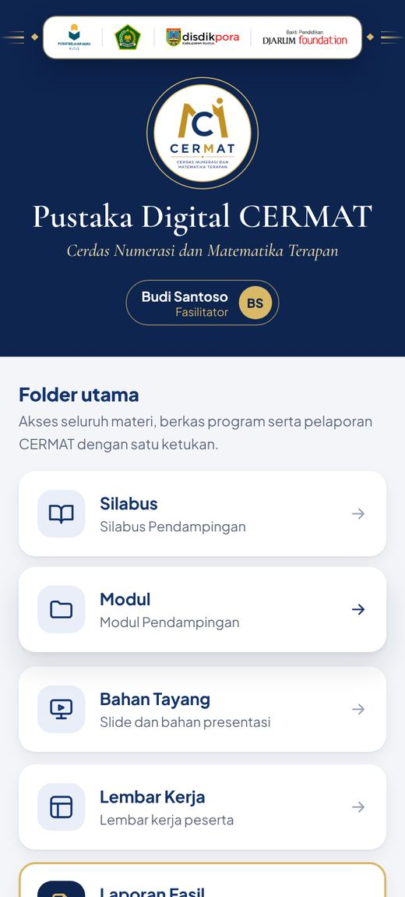
Bagian 6Data Sekolah: lengkapi sekali di awal
- 1Buka menu Data Sekolah.
- 2Isi nama kepala sekolah (dengan gelar) dan NIP kepala sekolah. Data ini wajib, dipakai untuk tanda tangan jurnal.
- 3Di Data guru, tambahkan setiap guru: nama lengkap dengan gelar, jabatan, dan kelas, lalu ketuk Tambah. Untuk banyak guru sekaligus, ketuk Tempel daftar sekaligus dan tempel daftar dari Excel/WhatsApp.
- 4Perubahan tersimpan otomatis. Data guru dipakai di daftar hadir setiap laporan.
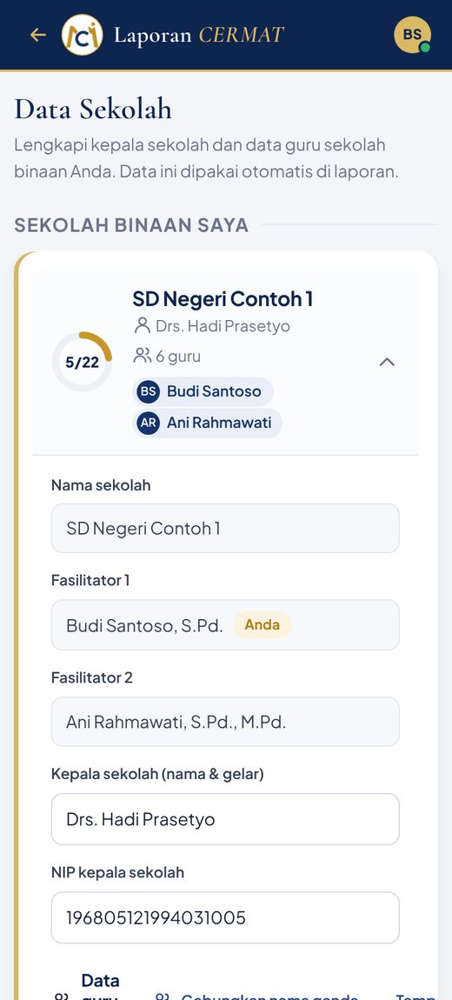
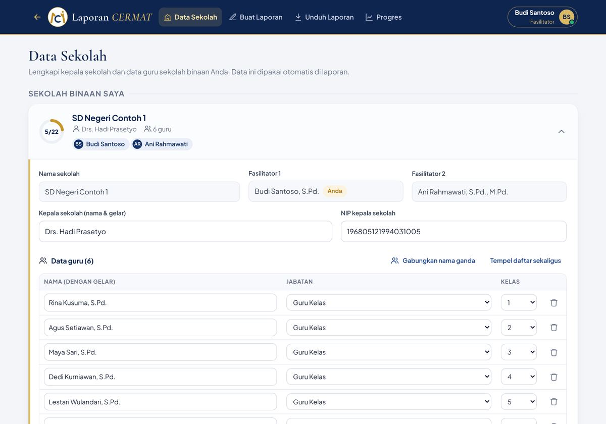
Bagian 7Buat Laporan: memilih pendampingan
- 1Buka menu Buat Laporan. Tampil 22 kartu pendampingan, dikelompokkan per fase.
- 2Label di setiap kartu: belum (belum dibuat), draf (belum lengkap), menunggu pengesahan, atau lengkap (sudah disahkan semua).
- 3Ketuk kartu pendampingan yang akan dilaporkan. Laporan terbuka di langkah 1.
- 4Laporan diisi dalam 7 langkah. Pindah langkah dengan tombol Berikutnya / Sebelumnya di bawah, atau ketuk nama langkah di bagian atas.
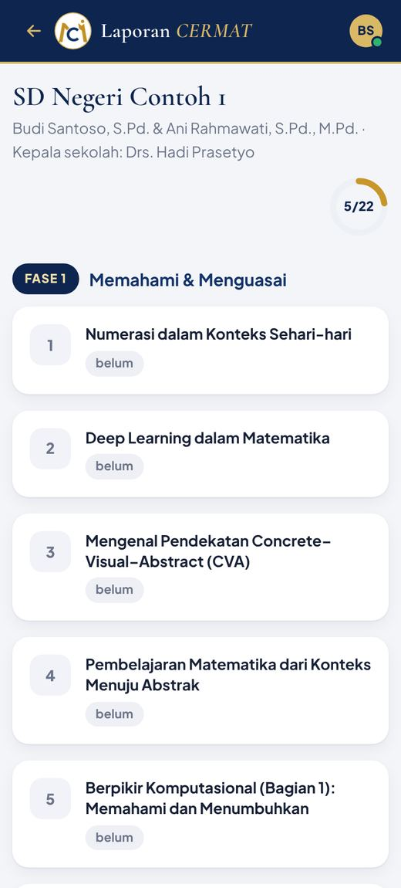
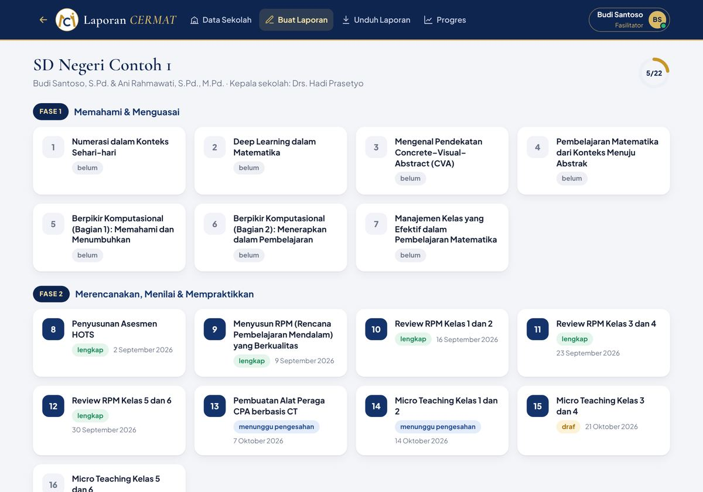
Bagian 8Langkah 1 · Pelaksanaan
- 1Centang fasilitator yang hadir. Namanya tercetak di sampul dan menandatangani jurnal kegiatan.
- 2Isi tanggal pelaksanaan (ketik, misalnya 20112026, atau pilih dari kalender), jam mulai, jam selesai, dan tempat.
- 3Kalimat laporan dan ringkasan silabus terisi otomatis sesuai pendampingan.
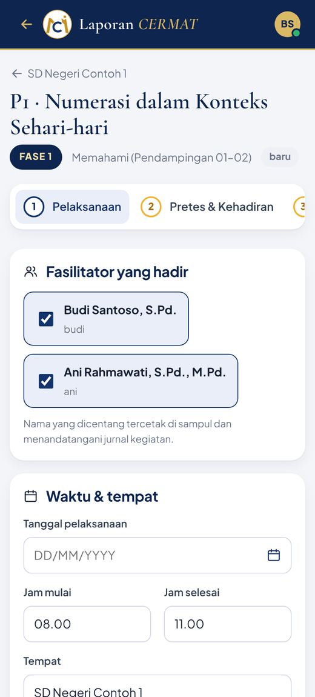
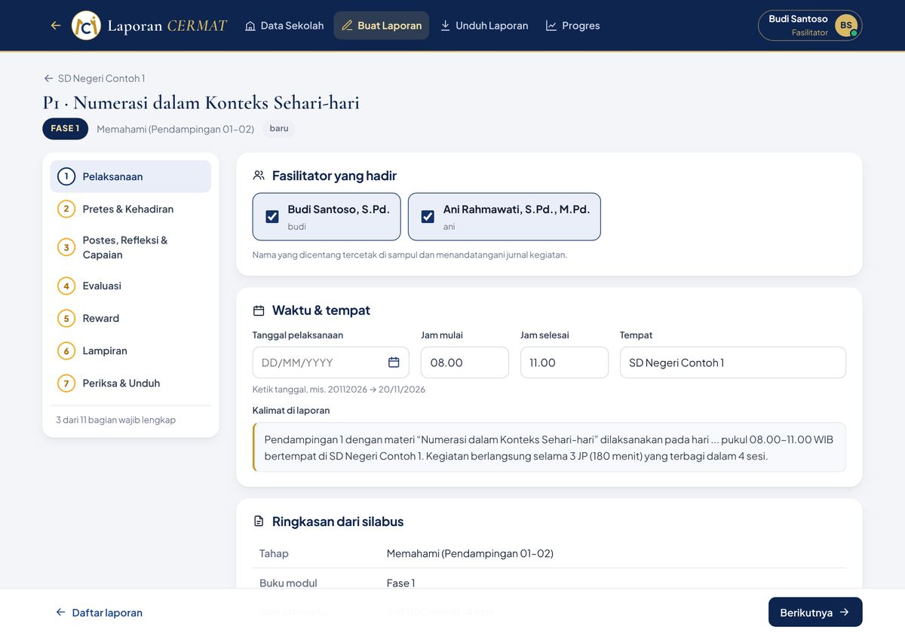
Bagian 9Langkah 2 · Pretes & Kehadiran
Pendampingan 1–7 memakai nilai pretes dan postes yang diambil langsung dari Google Form. Pendampingan lainnya hanya mengisi kehadiran.
- 1Ketuk Ambil nilai dari Google Form. Baris sekolah Anda terbaca otomatis, pretes dan postes langsung dipisahkan.
- 2Bila semua nama di form sama dengan daftar guru, nilai langsung masuk. Tidak ada yang perlu dicocokkan.
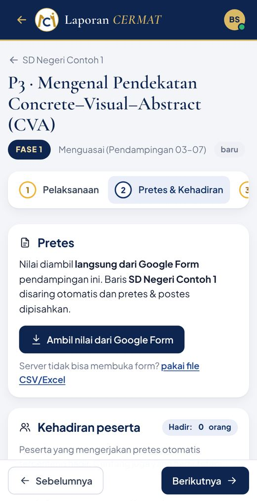
- 3Bila ada nama di form yang berbeda dari daftar guru (misalnya Agus Setiyawan dan Agus Setiawan, S.Pd.), muncul Periksa nama. Pilihan bertanda ★ adalah guru yang paling mirip.
- 4Ganti pilihan bila keliru. Pilih + Tambah sebagai peserta baru untuk guru yang belum terdaftar, atau Abaikan untuk isian coba-coba. Nama baru yang mirip satu sama lain (mis. pretes Siti Nurhaliza, postes Siti N.) otomatis diarahkan ke Sama dengan … (baru), jadi tetap satu orang. Lalu ketuk Ambil nilai.
- 5Pilihan diingat sebagai ejaan lain nama guru itu, juga untuk fasilitator pasangan Anda. Pendampingan berikutnya tidak ditanya lagi.
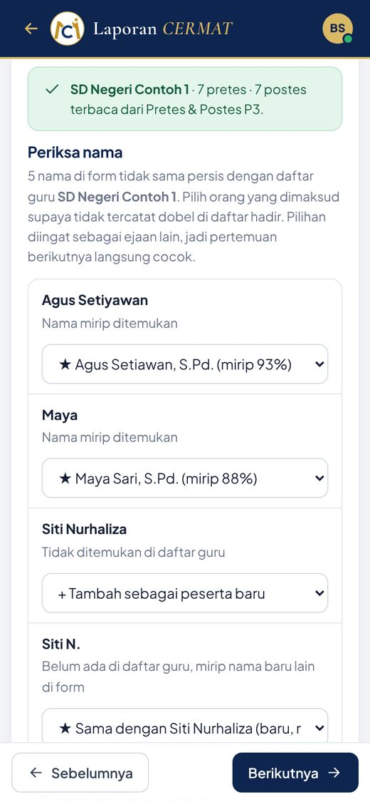
- 6Rata-rata pretes tampil. Postes dari form yang sama otomatis tampil di langkah 3.
- 7Di Kehadiran peserta, peserta yang mengerjakan tes sudah tercentang. Centang juga yang hadir tetapi tidak ikut tes.
- 8Peserta yang belum ada di daftar bisa ditambahkan di baris paling bawah, lalu ketuk Tambah.
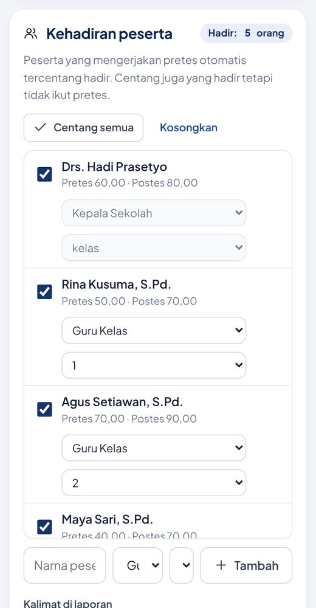
Bagian 10Langkah 3 · Postes & Capaian
- 1Rata-rata postes dan kenaikan nilai tampil otomatis. Bila postes baru selesai dikerjakan, ketuk Perbarui dari Google Form.
- 2Di Capaian indikator, pilih Tercapai, Sebagian, atau Belum untuk setiap indikator.
- 3Pendampingan 17–19 berisi Observasi & Capaian: isi hasil observasi dan coaching minimal untuk satu guru.
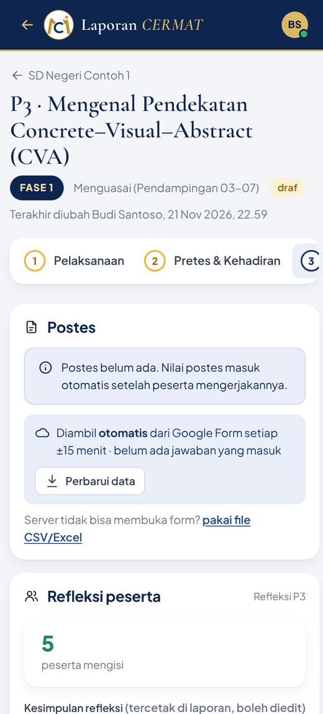
Bagian 11Langkah 4 · Evaluasi
- 1Isi Permasalahan yang ditemui dan Rekomendasi fasilitator. Keduanya wajib.
- 2Ketuk kalimat saran (berlatar biru) untuk menambahkannya, lalu sesuaikan. Tekan Enter untuk membuat paragraf baru.
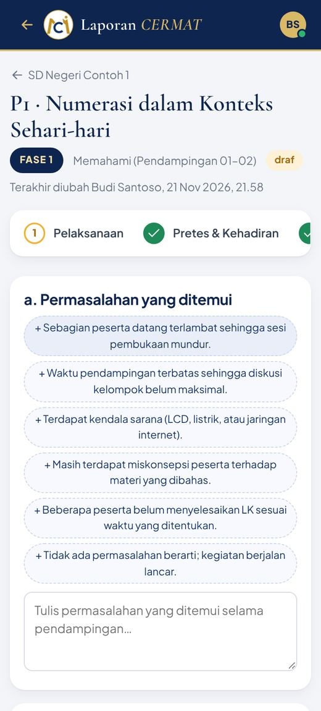
Bagian 12Langkah 5 · Reward bintang
- 1Daftar berisi peserta yang hadir. Ketuk + / − untuk mengisi jumlah bintang yang diperoleh di pendampingan ini.
- 2Peserta yang tidak mendapat bintang diisi 0. Tombol Isi 0 untuk yang masih kosong mengisinya sekaligus.
- 3Total bintang setiap peserta bertambah otomatis dari P1 sampai pendampingan ini, dan tercetak di PDF laporan.
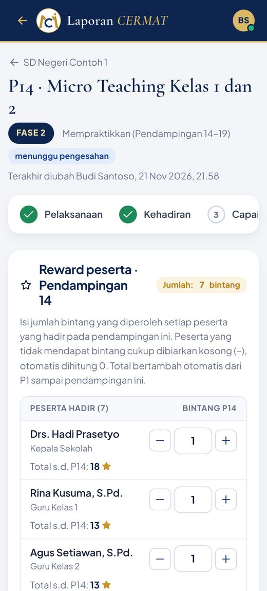
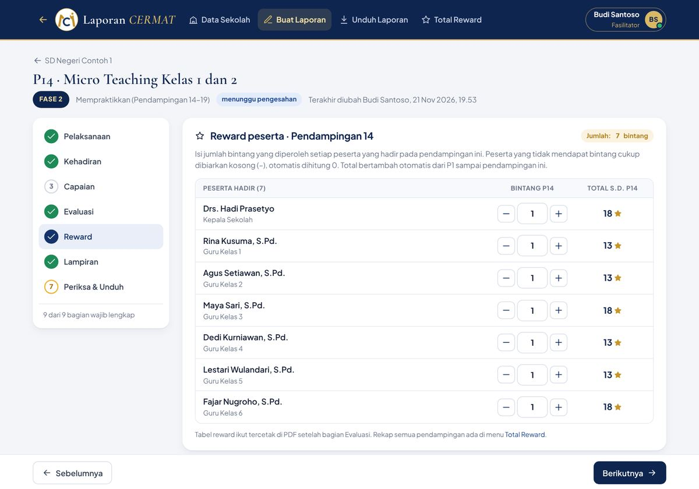
Bagian 13Langkah 6 · Lampiran
- 1Daftar hadir dan jurnal kegiatan dibuat otomatis (biarkan tercentang). Foto/scan yang bertanda tangan boleh ditambahkan.
- 2Foto dokumentasi: ketuk + Foto dan pilih minimal 1 foto kegiatan. Foto bisa diambil langsung dari kamera HP.
- 3Portofolio tugas (opsional): tambahkan foto hasil Lembar Kerja peserta pada bagian yang sesuai.
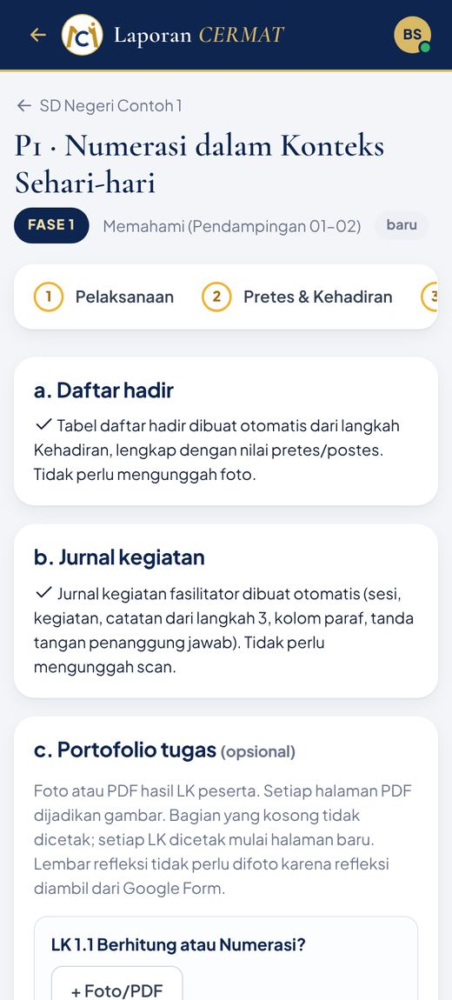
Bagian 14Langkah 7 · Periksa, sahkan, unduh
- 1Daftar periksa menunjukkan bagian wajib yang belum lengkap (tanda !). Ketuk Lengkapi → untuk langsung menuju bagian itu.
- 2Ketuk Pratinjau untuk melihat PDF. Selama belum lengkap, PDF bertanda DRAF; setelah lengkap tetapi belum disahkan, bertanda BELUM DISAHKAN.
- 3Bila semua lengkap dan titik sinkron di kanan atas hijau, ketuk Sahkan sebagai Fasilitator. Fasilitator 1 dan 2 masing-masing mengesahkan dari akunnya sendiri.
- 4Setelah kedua fasilitator mengesahkan, kepala sekolah mengesahkan dari akunnya. Kode QR ketiganya tercetak di Lembar Pengesahan dan Jurnal Kegiatan.
- 5Setelah disahkan lengkap, tombol Unduh PDF aktif. PDF juga diarsipkan otomatis ke Google Drive.
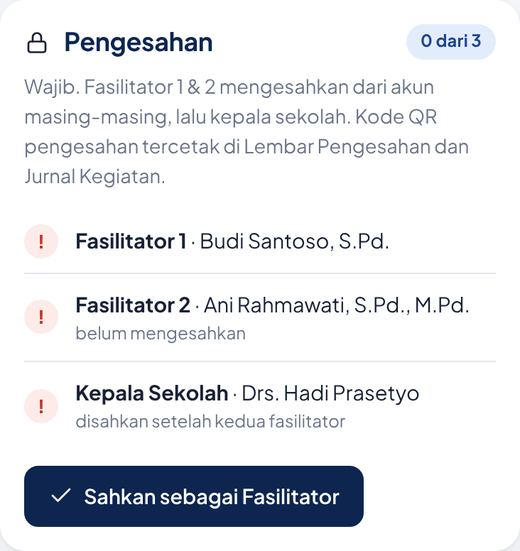
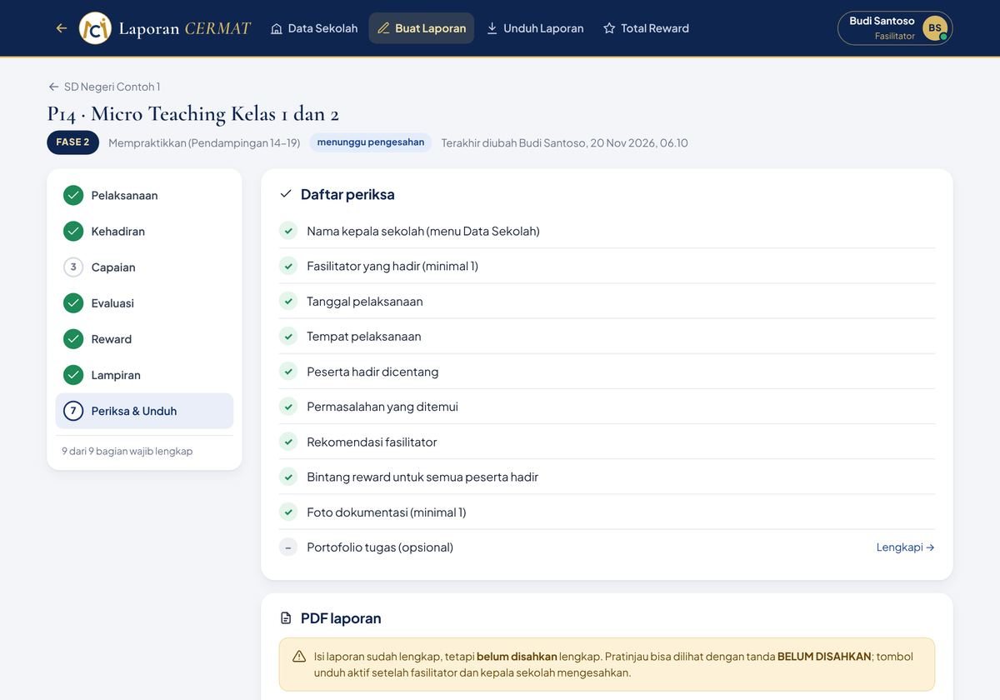
Bagian 15Membuka pretes & postes
- 1Di halaman utama Pustaka CERMAT, ketuk kartu Pretes & Postes. Tampil kartu P1–P7.
- 2Saat pendampingan, ketuk Aktifkan di baris Pretes pada kartu pendampingan hari itu. Guru dan kepala sekolah sekolah binaan Anda langsung bisa mengerjakan.
- 3Menjelang akhir sesi, ketuk Aktifkan di baris Postes. Pretes otomatis ditutup, jadi peserta hanya bisa mengerjakan postes. Setelah selesai, ketuk Tutup. Bila lupa, tes otomatis tertutup pukul 23.59 hari itu.
- 4Ikon tautan di ujung baris membuka form untuk Anda periksa sendiri. Jenis tes dan asal sekolah sudah terisi otomatis.
- 5Ketuk Lihat hasil untuk melihat nilai langsung dari Google Form: jumlah peserta, nilai terendah, tertinggi, dan rata-rata pretes & postes, kenaikan, serta nilai setiap peserta.
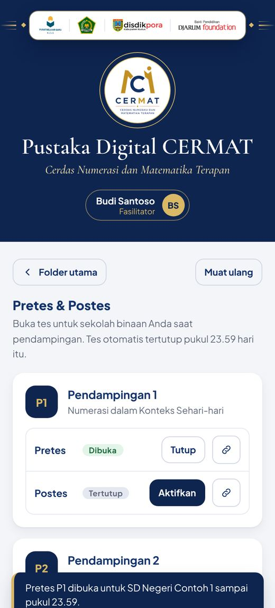
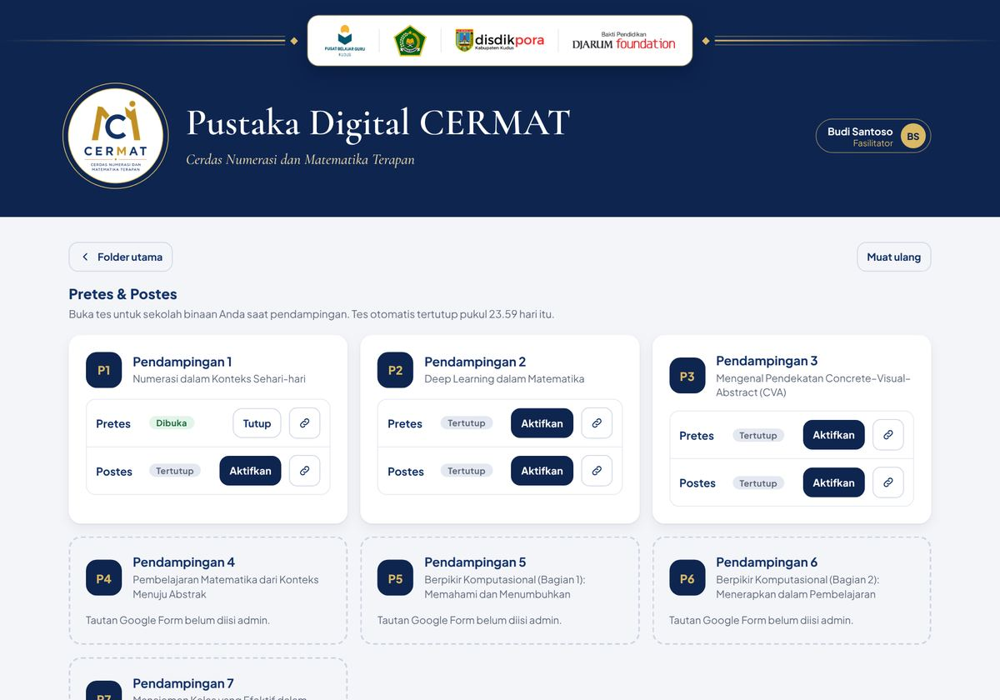
Bagian 16Merapikan nama guru yang dobel
- 1Buka Data Sekolah, lalu di Data guru ketuk Gabungkan nama ganda.
- 2Kemungkinan nama ganda tampil beserta persentase kemiripannya. Ketuk Gabungkan pada pasangan yang memang orang yang sama.
- 3Pasangan yang tidak terdeteksi bisa dipilih sendiri di Pilih sendiri: nama yang dipertahankan dan nama ganda yang dihapus, lalu ketuk Gabungkan.
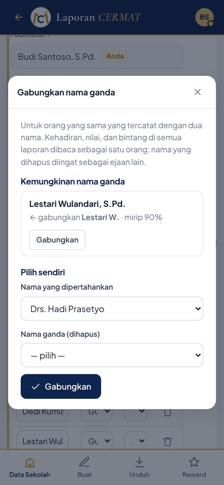
Bagian 17Unduh Laporan dan Total Reward
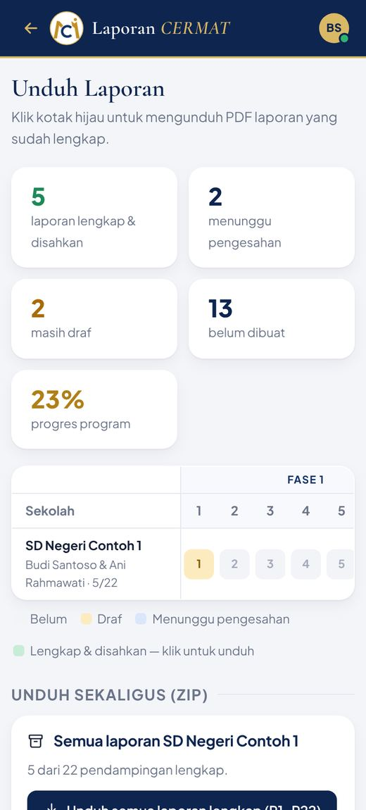
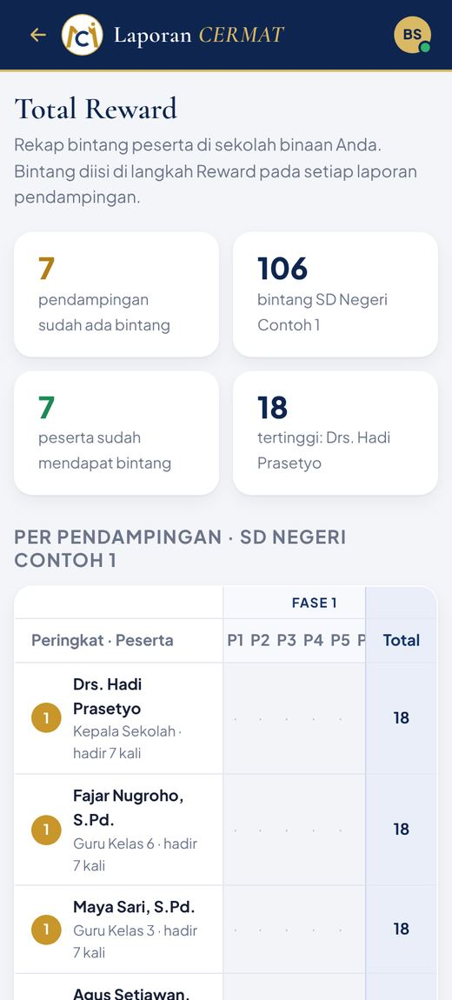
- 1Menu Unduh Laporan menampilkan ringkasan dan tabel P1–P22. Kotak hijau berarti lengkap dan disahkan: ketuk untuk mengunduh PDF-nya.
- 2Untuk mengunduh semua laporan lengkap sekaligus, ketuk Unduh semua laporan lengkap (P1–P22). Hasilnya satu file ZIP.
- 3Menu Total Reward menampilkan peringkat bintang peserta sekolah binaan Anda, per pendampingan dan total.
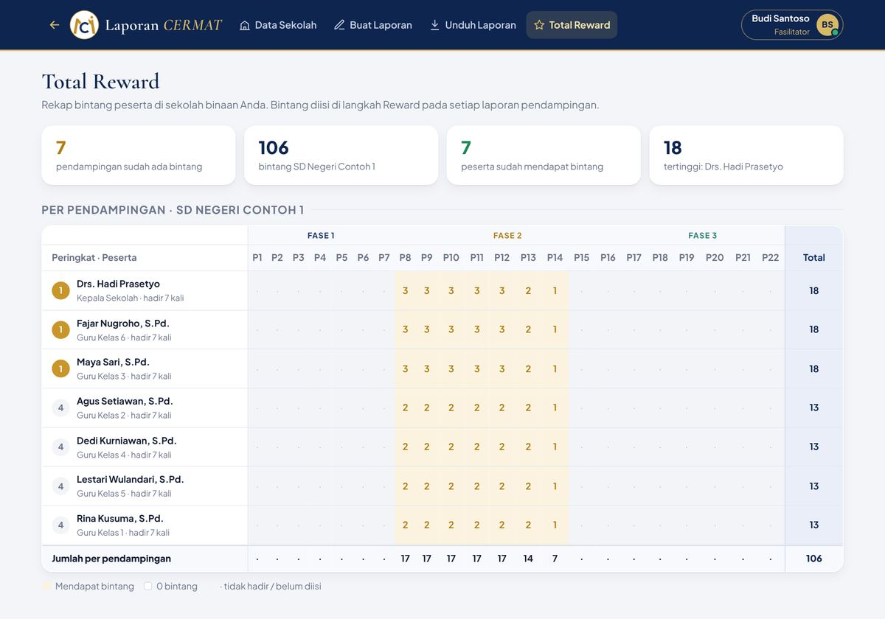
BantuanBila ada kendala
| Lupa password | Hubungi admin program. Admin akan memberi password baru; setelah masuk, segera ganti lewat Akun Saya. |
|---|---|
| Sinyal hilang saat mengisi laporan | Isian dan foto tetap tersimpan di HP dan otomatis terkirim saat sinyal kembali. Jangan keluar dari akun sebelum titik di kanan atas berwarna hijau (tersinkron). |
| Tampilan belum berubah setelah ada pembaruan | Tutup aplikasi sepenuhnya, lalu buka lagi. Bila belum berubah, ulangi sekali lagi. |
| Folder tidak bisa dibuka / diminta izin | Folder Google Drive mengikuti izin akses. Pastikan Anda memakai akun Google yang sudah diberi akses, atau hubungi admin. |